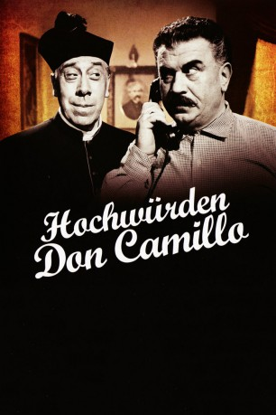

#936 Don Camillo und Peppone 4 - Hochwürden Don Camillo
 
 IMDB-Wertung: 7.0 / 10
IMDB-Wertung: 7.0 / 10  Metascore: 0
Metascore: 0 
Erneute Fortsetzung der Don-Camillo-Filme. In diesem Teil sind einige Jahre vergangen und einiges hat sich geändert. Don Camillo ist inzwischen zum Prälat aufgestiegen und sein alter Erzfeind Peppone arbeitet für den Senat. Nur ihre Streitlust bleibt auch nach all der Zeit ungebrochen.
Jahr: 1961
Dauer: 117 Minuten
FSK: 12
Land: Italien Studio: Gloria Filmverleih AGTonspuren:
Untertitel: Deutsch,
Auflösung: 1080p (1920x1080) Größe: 8960 MB
Genre: Komödie
Regisseur: Carmine Gallone
Drehbuch: René Barjavel, Leonardo Benvenuti, Piero De Bernardi, Carmine Gallone, Giovanni Guareschi
Soundtrack: Alessandro Cicognini
Darsteller:
 Fernandel als Don Camillo
Fernandel als Don Camillo Gino Cervi als Giuseppe 'Peppone' Botazzi
Gino Cervi als Giuseppe 'Peppone' Botazzi Saro Urzì als Brusco, il sindaco
Saro Urzì als Brusco, il sindaco- Leda Gloria als Maria Botazzi, moglie di Peppone
- Gina Rovere als Gisella Marasca
- Valeria Ciangottini als Rosetta Grotti
- Marco Tulli als Lo smilzo
 Andrea Checchi als L'esponente comunista di Roma
Andrea Checchi als L'esponente comunista di Roma- Emma Gramatica als Desolina, la vecchia
- Karl Zoff als Walter Lenine Botazzi, figlio di Peppone
- Ruggero De Daninos als Un monsignore
- Carlo Taranto als Marasca, il marito di Gisella
- Armando Bandini als Don Carlino
- Giuseppe Porelli als Il dottor Galluzzi
- Andrea Scotti als Il capo dei giovani atleti
- Giulio Girola als Il signor Grotti, padre di Rosetta
- Alexandre Rignault als Fagò
- Fortunato Arena als Truck Driver , uncredited
- Ignazio Balsamo als Un compagno socialista , uncredited
- Paul-Emile Deiber als La voix de Jésus, French version , uncredited
- Elio Folgaresi als (uncredited
- Carlo Giuffrè als (uncredited
- Armando Migliari als Un esponente democristiano , uncredited
- Spartaco Pellicciari als (uncredited
- Franco Pesce als Il sacrestano , uncredited
 Luciano Pigozzi als Segretario del esponente comunista di Roma , uncredited
Luciano Pigozzi als Segretario del esponente comunista di Roma , uncredited- Renzo Ricci als La voce di Gesù, Italian version , uncredited
- Gustavo Serena als (uncredited
- Mario Siletti als Un altro esponente democristiano , uncredited
Datei: X:\5-Pentalogie(A-Z)\Don Camillo und Peppone\Don Camillo und Peppone 4 - Hochwürden Don Camillo (1961, FSK12, 1920x1080).mkv seit 22.04.2015
Festplatte: HD Collection-3(N-Z)-6(A-Z)
 Es gibt insgesamt 8 Filme in der Gruppe '5-Pentalogie(A-Z)\Don Camillo und Peppone'
Es gibt insgesamt 8 Filme in der Gruppe '5-Pentalogie(A-Z)\Don Camillo und Peppone'